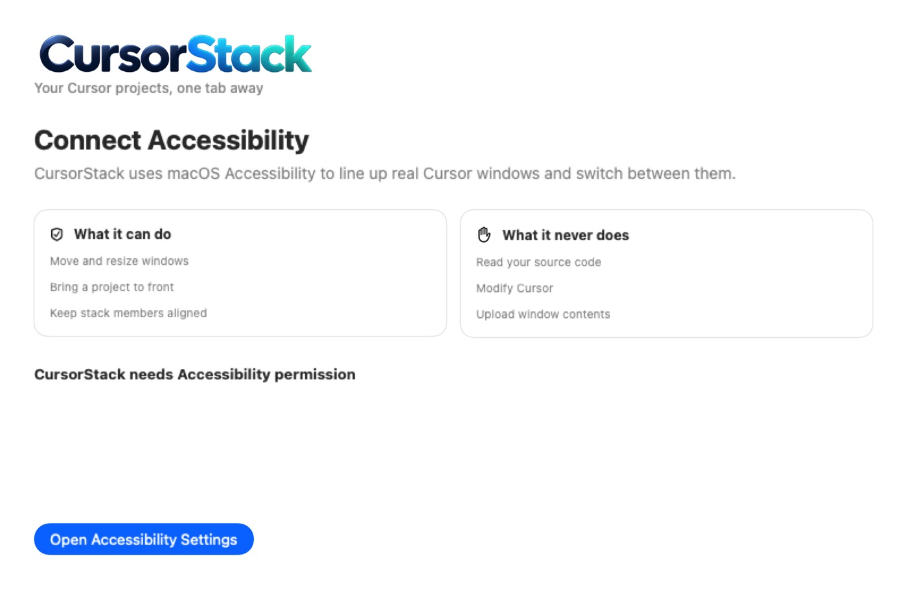

macOS 14 or newer · Apple silicon
Your Cursor projects, one tab away.
CursorStack lines up the Cursor windows you already have and puts one tab strip on them. Same frame. One click to switch. It does not embed Cursor, and it does not read your code.
- Nothing uploaded
- No account
- Signed and notarized
One strip. Real windows.
macOS treats every Cursor window as its own thing. CursorStack keeps the ones you pick on the same frame and lets you move between them like tabs.
-
The windows stay Cursor’s
The windows stay Cursor’s. The strip sits above the title bar, so Cursor’s own search field still works.
-
Drag the tabs into the order you want
Reorder in the strip, or drop a tab onto another group. Groups stay in Application Support on this Mac.
-
See which project needs you
An attention mark shows up on a tab when that window looks busy. The orange dot in the picture above is that mark. Notifications are optional.
What you actually get


How it works
Install
- 01Unzip the release and open CursorStack.
- 02Choose Install to Applications in Settings.
- 03Grant Accessibility when macOS asks.
Use
- 04Open the Cursor windows you want in one place.
- 05Make a stack from the menu bar icon or the window picker.
- 06Click a tab, or use the shortcuts, to bring that project forward.
Closing CursorStack leaves the Cursor windows open. Clicking another app hides the strip, the same way a normal window would.
Requirements
- macOS 14 or newer
- Apple silicon Mac
- Cursor
- Accessibility permission
- Notifications, if you want them
- Screen Recording, only for the experimental attention check
What it never does
- Read your source code
- Modify Cursor
- Upload window contents
- Ask you to make an account
The only network request is Sparkle checking the public GitHub release feed for a signed update. The update archive is verified before it installs.
Shortcuts
These are the defaults. Change them under Settings, Shortcuts. CursorStack warns you if one clashes with another shortcut or with macOS.
- Next tab ⌃⌥ ]
- Previous tab ⌃⌥ [
- Jump to a tab ⌃⌥ 1–9
Latest signed build, from GitHub Releases.